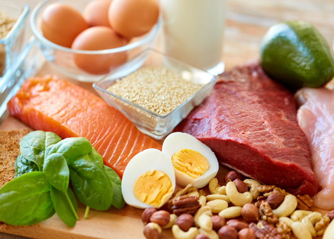
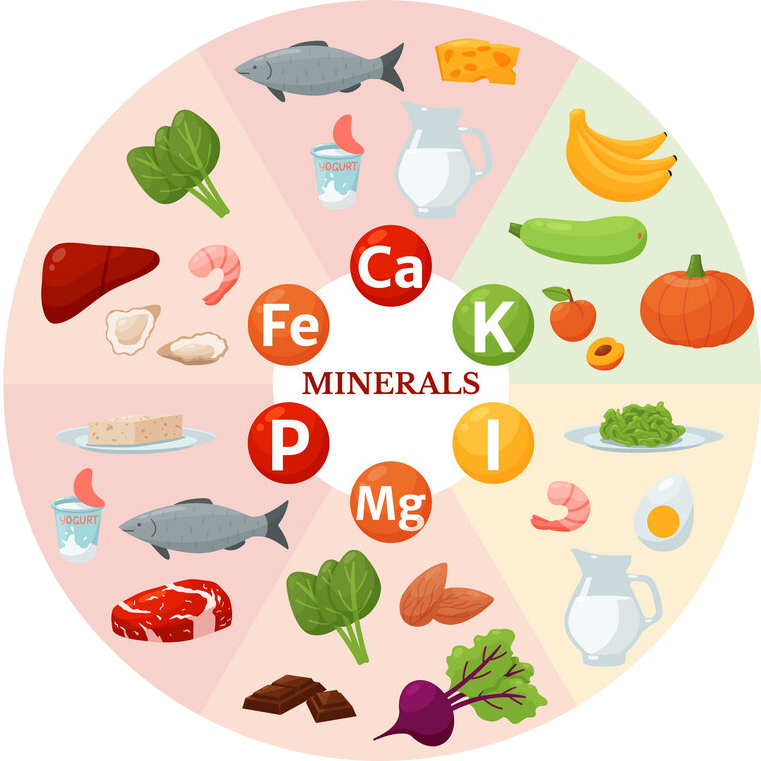

<!DOCTYPE html>
<html lang="en">

<head>
    <meta charset="UTF-8">
    <meta http-equiv="X-UA-Compatible" content="IE=edge">
    <meta name="viewport" content="width=device-width, initial-scale=1.0">
    <title>Assessment</title>

    <link href="https://cdn.jsdelivr.net/npm/bootstrap@5.3.2/dist/css/bootstrap.min.css" rel="stylesheet" integrity="sha384-T3c6CoIi6uLrA9TneNEoa7RxnatzjcDSCmG1MXxSR1GAsXEV/Dwwykc2MPK8M2HN" crossorigin="anonymous">
    <script src="https://cdn.jsdelivr.net/npm/bootstrap@5.3.2/dist/js/bootstrap.bundle.min.js" integrity="sha384-C6RzsynM9kWDrMNeT87bh95OGNyZPhcTNXj1NW7RuBCsyN/o0jlpcV8Qyq46cDfL" crossorigin="anonymous"></script>
    <link rel="preconnect" href="https://fonts.googleapis.com">
    <link rel="preconnect" href="https://fonts.gstatic.com" crossorigin>
    <link href="https://fonts.googleapis.com/css2?family=Quicksand:wght@300&display=swap" rel="stylesheet">

    <link rel="stylesheet" href="styles.css">
    <link rel="icon" type="image/x-icon" href="favicon.ico">
</head>


</html>


<style>
    .carb-intro-text {
        float: left 50%;
    }
    
    .food-plate {
        height: 100px;
        float: right;
    }
    
    .prolist {
        display: grid;
    }
    
    span {
        font-weight: bold;
    }
    
    p {
        font-family: 'Quicksand', sans-serif;
    }
</style>

<body>
    <nav class="navbar navbar-expand-lg bg-body-tertiary" data-bs-theme="dark">
        <div class="container-fluid">
            <a class="navbar-brand" href="#">BalancedPlate</a>
            <button class="navbar-toggler" type="button" data-bs-toggle="collapse" data-bs-target="#navbarNavAltMarkup" aria-controls="navbarNavAltMarkup" aria-expanded="false" aria-label="Toggle navigation">
                  <span class="navbar-toggler-icon"></span>
                </button>
            <div class="collapse navbar-collapse" id="navbarNavAltMarkup">
                <div class="navbar-nav">
                    <a class="nav-link " href="index.html ">Home</a>
                    <a class="nav-link" href="Nutrients.html">Nutrients</a>
                    <a class="nav-link" href="Assess.html">Assessment</a>
                    <a class="nav-link " href="recipe.html">Lunchbox recipe</a>
                    <a class="nav-link" href="Paddock.html">Paddock to plate</a>
                    <a class="nav-link" href="safety.html">Kitchen Safety</a>
                    <a class="nav-link" href="conclusion.html">Conclusion</a>
                </div>
            </div>
        </div>
    </nav>


    <div class="intro">
        <div id="box-1" class="p-5 mb-4 bg-body-tertiary rounded-3">
            <div class="container-fluid py-5">

                <div class="carb-intro-text">
                    <p style="font-family: 'Quicksand', sans-serif;" class="col-md-8 fs-4">
                        <h1>Nutrients</h1>Nutrients are chemical substances found in every living thing on earth.They help the body carry out vital functions and aid the body systems in working properly.They are used in every process of an organisms body.
                        The 6 nutrients are broken in two groups, Macro and Micro.<br><br>
                        <span>Macro Nutrients</span> are nutrients that we need in larger quantities because they provide us with energy.Macronutrients are Protein, Carbohydrates,Fats and water<br><br> <span>Micronutrients</span> are the nutrients that
                        body requires in small ammounts such as Vitamins and minerals.Even though only a small ammount of them are needed fo the body, not having them can result in severe conditions.They are no less important than Macronutrients. Remember:
                        The ammount of calories per daily is different for everyone based on their physical activity, however here is a rough average:
                        <br> Males 14-18 years:2800calories
                        <br>Females 14-18 years:2600calories</p>
                </div>


            </div>


        </div>
    </div>

    <h1 style="margin-left: 30px; margin-top: 100px;">Carbohydrates</h1>
    <div class="container" id=" carbs ">

        <h6> Carbohydrates are the main food source for our bodies and they work as a fuel to keep our body going.All carbohydrates have a chemical composition of hydrogen,Oxygen and carbon.They consist of fiber,starch and sugars.Along with proteins and fats,
            carbohydrates are one of the three main nutrients found in food and they are a Macronutrient.Carbohydrates can be classified in two groups, Simple and Complex.An adolescents' diet should have a minimum of 130 grams per day or 60% of their
            daily calories.</h6>
        


        <p>
            <h3>
                Complex Carbohydrates

            </h3>
            Complex Carbs are made of sugar molecules that are in long,'complex' chains. They contain more nutrients than simple carbohydrates. They provide vitamins,minerals and fiber, all of which are important to carry out vital functions of the human body.We
            should include more complex carbs than simple carbs in our diet by incorporating wholegrain bread, pasta and brown rice.

        </p>

        <p>

            <h3>
                Simple Carbohydrates
            </h3>
            Simple carbohydrates are broken down quickly and only supply energy for a while.This is caused because of simple carbohydrates consisting of a shorter chain of molecules, so when digested, simple carbohydrates cause a spike in blood glucose levels which
            causes people to feel lethargic and tired.Some examples of simple carbs are soda, white bread, deserts and processes food such as potato chips.
        </p>
        <h3>
            Fiber
        </h3>
        <p> Fiber is the indigestible part of food , and is important for our digestive health. The role of fiber is to aid the digestive system and helps imrpve bowel health. There are two types of fibers, soluble and insoluble.Insoluble fibers are those
            that do not disolve in water and remain intact within the body. Soluble fibers are those that disolve in water wthin the body. The human body requires both insoluble and soluble fibers so it is imperitive that we eat a range of wholegrains,
            fruits and vegetables.A male 14-18 years should have a recommended ammount of fibre which is around 28 grams per day. For females aged 14-18, 22 grams of fiber should be consumed per day.


        </p>
        <h3>
            Low GI
        </h3>
        <p>The glycaemic Index measures how fast our body obtains energy from carbohydrates. It refers to how quickly The sugar released by the carbohydrates(glucose) is broken down and increases the blood glucose levels. The Glycaemic index is measured
            or scaled between 0-100.Adolescents should have a a higher amount of low GI food every day because it has many benefits including feeling fuller for longer while having increased concentration levels and helping control weight as you don't
            feel like snacking since you feel full. Some foods which have a low GI include Carisma potatoes, most fruit and vegetables,Barley, dense wholegrain bread,Basmati rice, milk and yogurt and nuts.A food is considered to have low GI if its rating
            than 55.
        </p>


    </div>
    <br style="border: 5px;">
    <h1 style="margin-left: 30px; margin-top: 100px;">Protein</h1>

    <div class="container">


        <div class="Protein">
            

            <p>
                Proteins are made up of amino acids and have multiple roles to playon the body. They are used to build and repair muscles, and can be also used as a source of energy. Protein is found in meat, fish,eggs,dairy products, seeds, nuts and legumes.Proteins
                are made up of about 20 different amino acids in different combination. There are non-essential amino acids, the body already has these inside. For example Amino acids such as glutamine,Aspartic acidand proline.The recommended daily intake
                for adloescent males between 14 and 18 yaers is around 65 grams , and for femlaes of the same age, it is 45 grams.You can achieve this many grams by eating a variety oof different foods from the list below every day.
                <br>Essential amino acids are those that our body requires from the food we eat such asLysine, Hystidin and Tryptophan.Some foods contain all 9 essentialamino acids such as potatoes,quineoa and eggs.Some healthy sources of protein include
                <div class="prolist">
                    <ul>
                        <li>eggs</li>
                        <li>Cottage cheese</li>
                        <li>Tofu</li>
                        <li>Legumes</li>
                        <li>Meat</li>
                        <li>Lentils</li>
                        <li>fish</li>
                        <li>quineoa</li>
                        <li>Nuts</li>
                        <li>Poultry</li>
                        <li>Beef</li>

                    </ul>
                </div>
            </p>

        </div>

    </div>

    <h1 style="margin-left: 30px; margin-top: 0px;">Minerals</h1>
    <div id="minerals" class=" container ">
        
        <p style="margin-left: 50px;">Minerals help the body build strong teeth and bones, control body fluids and turn the food we eat into energy.Some minerals are needed in larger quantities(called major minerals) and include calcium, chloride, Magnesium, Phosphorous, Potassium,
            Sodium and Sulfer. The daily intake is different for each mineral, for example a male adolescent should be having around 11 milligrams of Iron, and 410mg of magnesium. A female adolscent should have 15mg of iron and 360mg of magnesium. Trace
            minerals are those which our body only needs in small quantities and include Copper and Manganese.Some foods that are high in major minerals include
            <ul>

            </ul>
            <li>Calcium: Cheese, Tofu, Youghurt</li>
            <li>Magnesium: Spinach, Dark Chocolate, avacado</li>
            <li>Chloride: Vegetable, Olives, Celery</li>
            <li>Phosphorous: Eggs, Poultry, Beans</li>
            <li>Potassium: apricots, Leafy Greens, Avacados</li>
            <li>Sodium: Cheese, Bread, Soy sauce</li>
            <li>Sulfer: Garlic, Eggs, Onions</li>
        </p>
    </div>

    <br><br>


    <h1 style="margin-left: 30px; margin-top: 0px;">Fats</h1>
    <div id="Fats" class=" container ">

        <p style="float: left; width: 75%"> Fats are used in our body to keep us warm,protect our organs, support cell growth, helps keep blood pressure and cholestrol levels down, as well as aid in digesting vitamins and carrying them around the body. Solid fats whcih are solid at room
            temperature are called fats such as nuts, butter, meat and fish. Ftas that are liquid at room temperature are called lipids and include oil. It is important tht our diets consist of UNSATURATED fats as this can help lower cholestrol levels.</p>
        


    </div>


    <h1 style="margin-left: 30px; margin-top: 0px;">Vitamins</h1>
    <div id="Vitamins" class=" container ">

        <p> Vitamins are organic compounds that are needed by the body to perform everyday functions, normal cell growth, growth and development.They are required in not too high of a quantity, but still very important.There are different types of vitamin
            such as vitamin D (found in salmon and yoghurt ), vitamin C(found in oranges and brocolli), Folate(found in asparagus and avacado), Vitamin k(in spinach and kale) and many more. In order to have enough of each vitamins, we must have a diverse
            diet consisting of different fruits and vegetables.</p>


    </div>


    <h1 style=" margin-left: 30px; margin-top: 0px; ">Water</h1>
    <div id="water " class=" container ">
        <p>Water is a Macronutrient is crucial for the human body becuase it the body is literally 55-60% water. Water helps the body control temperature,it forms saliva and mucucs,helps flush body waste, improves skin health and much more.The average ammount
            of water 14-18 year old females and males require is between 1-2 litres. Apart from drinking water, there is also a lot of water in many foods such as cucumbers,watermelon,pineapple, strawberries,oranges and brocolli.
            <p>


    </div>


</body>
</body>